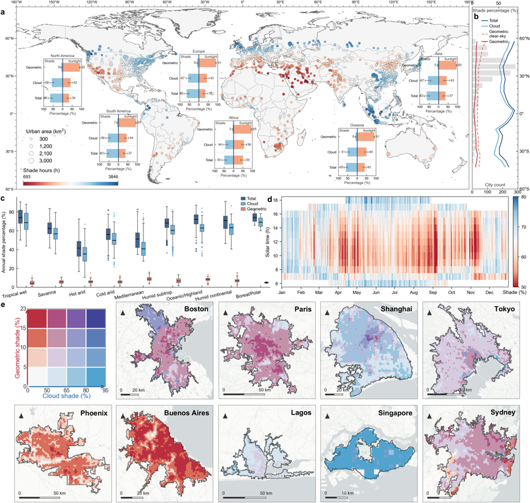
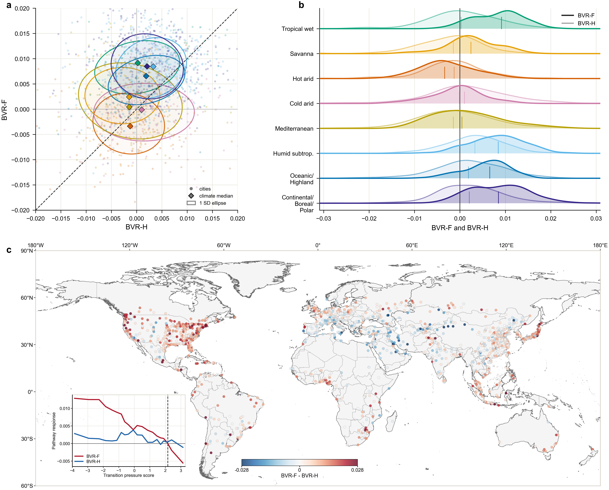

Manuscripts, peer-reviewed journal articles, book work, and reports.
Selected current work
Manuscripts Under Review
First-author manuscript - Under Review - Nature Communications
Urban shade is globally misaligned with radiative demand
Jinyu Hu, Zhaowu Yu, et al.
Manuscript under review. This work develops a global analysis of sunlight and shadow patterns across 1,487 major cities using digital surface models and geostationary satellite data.

First-author manuscript - Under Review - Environmental Science & Technology
Building Footprint Has a Stronger Land Surface Temperature Signal Than Building Height Across Global Cities
Jinyu Hu, Zhaowu Yu, et al.
Manuscript under review. This study examines how building volume relates to land surface temperature across global cities, separating vertical height increments from horizontal footprint expansion to compare their warming signals during urban expansion.

Published research
Peer-reviewed Journal Articles
The content here is consistent with my Google Scholar profile. Publications have received over 450 citations.
First author - 2022 - Ecological Indicators
Exploring the spatial and temporal driving mechanisms of landscape patterns on habitat quality in a city undergoing rapid urbanization based on GTWR and MGWR: The case of Nanjing, China
Jinyu Hu, Jiaxin Zhang, and Yunqin Li
Ecological Indicators 143 (2022): 109333. ESI Highly Cited Paper Elsevier China Gold Open Access high-download paper in 2023 Q3.
Second author - 2026 - Environmental Impact Assessment Review
Cooling varies with green space characteristics: Unraveling nonlinear spatial heterogeneity in cooling effects of urban green spaces with geographic explainable AI
Greener is not always better: Exploring the non-linear relationships between three-dimensional green and gray spaces exposure and various physical activities
Yuheng Mao, Tianyu Xia, Fan Hu, Jinyu Hu, Yichen He, Jingheng Yan, Le Wang, Hongmei Xu, Jinguang Zhang, and Dan Chen
The greener the living environment, the better the health? Examining the effects of multiple green exposure metrics on physical activity and health among young students
Yuheng Mao, Tianyu Xia, Fan Hu, Dan Chen, Yichen He, Xing Bi, Yangcen Zhang, Lu Cao, Jingheng Yan, Jinyu Hu, et al.
Nature-Based Solutions: Principles and Applications
Contributed to the writing, revision, and editorial review of Chapter 2, "Nature-Based Solutions for Multiple Challenges."
Report Contribution - Lancet Countdown Asia Center
2025 China report of the Lancet Countdown on health and climate change
Contributed to evidence collection and drafting related to climate change, public health, policy, academic research, and institutional activity in China and Asia.